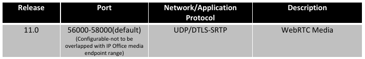

Based on Avaya WebRTC API Requirements & Guidelines
-
Avaya IP Office Requirements
- Release 11
- IP Office 500v2 & Application Server
IP Office Server Edition
-
Avaya IP Office License Requirements
- Prefered Edition
- Power User License
WebRTC Gateway Signalling Port
-
The following TCP ports need to be opened in the firewall/corporate router, in case if web clients reside in public internet

WebRTC Gateway Media Port
- The below UDP ports need to be opened in the firewall/corporate router in case of clients resides in public internet 
Certificate Requirements
-
To improve the security of the WebRTC Gateway link, users should perform the following steps prior to using the client application.
- Obtain the CA certificate that signed the identity certificate of the WebRTC Gateway server.
- Install the obtained certificate into Browser's Certificate store and trust the certificate.
Note:
- if certificate is not installed, Web Client will not be able to connect to gateway
- The gateway does not support mutual authentication and hence, does not require clients certificate
- The gateway uses the same certificate which one-X portal uses
- The CA certificate can be obtained from Web Control Portal
- See Avaya IP Office Platform Security Guidelines for more information
- Browser required to install and trust CA Certificates of both Primary and Secondary one-X for Resiliency